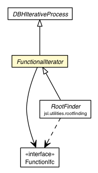

jsl.utilities.math
Class FunctionalIterator

java.lang.Object
 jsl.utilities.math.DBHIterativeProcess
jsl.utilities.math.FunctionalIterator
jsl.utilities.math.DBHIterativeProcess
jsl.utilities.math.FunctionalIterator
- Direct Known Subclasses:
- RootFinder
public abstract class FunctionalIterator
- extends DBHIterativeProcess
Iterative process based on a one-variable function,
having a single numerical result.
|
Field Summary |
protected FunctionIfc |
f
Function for which the zero will be found. |
protected double |
result
Best approximation of the zero. |
| Methods inherited from class jsl.utilities.math.DBHIterativeProcess |
evaluate, evaluateIteration, finalizeIterations, getDesiredPrecision, getIterations, getMaximumIterations, getPrecision, hasConverged, initializeIterations, relativePrecision, setDesiredPrecision, setMaximumIterations |
| Methods inherited from class java.lang.Object |
clone, equals, finalize, getClass, hashCode, notify, notifyAll, toString, wait, wait, wait |
result
protected double result
- Best approximation of the zero.
f
protected FunctionIfc f
- Function for which the zero will be found.
FunctionalIterator
public FunctionalIterator(FunctionIfc func)
- Generic constructor.
- Parameters:
func - OneVariableFunctionstart - double
getResult
public double getResult()
- Returns the result (assuming convergence has been attained).
relativePrecision
public double relativePrecision(double epsilon)
- Parameters:
epsilon - double
- Returns:
- double
setFunction
protected void setFunction(FunctionIfc func)
- Parameters:
func - OneVariableFunction
Copyright © 2012 Manuel D. Rossetti. All Rights Reserved.